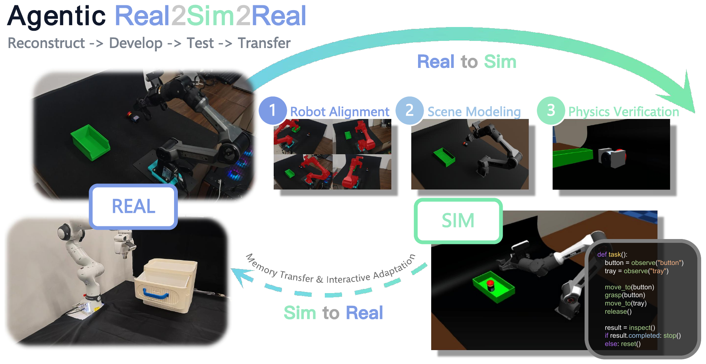
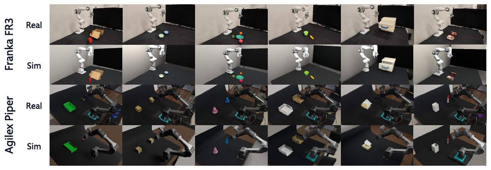
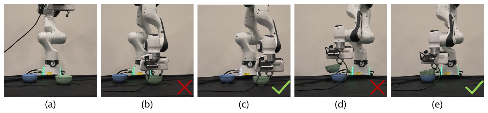
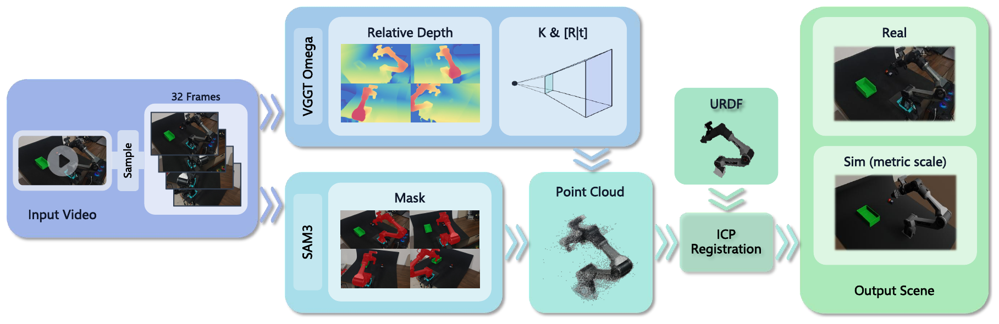
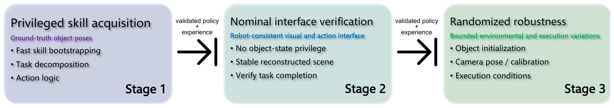

Agentic RSR: Real-to-Sim-to-Real through Scene Reconstruction and Execution-Grounded Robot Policies
* Equal contribution (co-first authors) · † Corresponding authors

From real to simulation
White drawer · Astra / DSHOne task, from reconstruction to execution.
Agentic RSR connects scene reconstruction and policy development through the same manipulation task. Known robot geometry anchors metric scale; visual feedback refines the scene; MuJoCo checks task-relevant interactions. A coding agent develops policies through privileged, visual, and randomized simulation. Observations, actions, and experience then carry to the real robot through a shared task-level interface.
Visualizations
Real scenes, reconstructed simulations, and robot execution.




Method
Recover scale. Refine scenes. Learn from execution.
Robot alignment
VGGT-Ω depth and cameras, SAM3 masks, and URDF surface alignment establish robot-base coordinates and metric scale.
Scene modeling
A coding agent builds objects, materials, and lighting in Blender while robot geometry and reference cameras stay fixed.
Physics & policy
MuJoCo probes interactions. A policy progresses from privileged states to visual observations and randomized simulation.


Repository
Start from a source checkout.
The initial full-inference target is Linux, NVIDIA CUDA, and Python 3.11. Model source revisions and dependencies are pinned; gated checkpoints and task videos are supplied separately.
git clone --recurse-submodules https://github.com/HY-LiYihan/agentic_rsr.git
cd agentic_rsr
uv sync --locked --python 3.11 --extra local --extra sim --extra agent --extra dev
uv run --no-sync real2sim-models checkCurrent reproduction status
Offline tests and CPU registration / Blender delivery are verified. Fresh local CUDA checkpoint inference remains unverified. The public agent implementation is Codex-based; the latest DSH reconstruction batch in the paper is not reproduced by this checkout. Project code uses Apache-2.0. Historical experiment artifacts are archived in a private Hugging Face dataset requiring authorized access; asset migration and some permissions remain pending. Hardware execution requires independent safety review.
Citation
@misc{li2026agenticrsr,
title={Agentic RSR: Real-to-Sim-to-Real through Scene Reconstruction and Execution-Grounded Robot Policies},
author={Li, Yihan and Feng, Yating and Sun, Shengjiu and Chen, Jianing and Ren, Hao and Yang, Bowen and Xu, Weisheng and Wu, Qiwei and Cheng, Hui and Xu, Renjing},
year={2026},
eprint={2610.10479},
archivePrefix={arXiv},
primaryClass={cs.RO},
doi={10.48550/arXiv.2610.10479},
url={https://arxiv.org/abs/2610.10479}
}